Как да обслужваме Django приложения с Apache
Въведение
Django е мощна уеб рамка, която може да ви помогне бързо да стартирате вашето Python приложение или уебсайт. Django включва опростен сървър за разработка за локално тестване на вашия код, но за всичко, дори малко свързано с производството, е необходим по-сигурен и мощен уеб сървър.
В това ръководство ще демонстрираме как да инсталирате и конфигурирате Django във виртуална среда на Python. След това ще настроим Apache пред нашето приложение, така че да може да обработва клиентски заявки директно, преди да предаде заявки, които изискват логика на приложението, към приложението Django. Ще направим това с помощта на mod_wsgiмодула Apache, който може да комуникира с Django през спецификацията на интерфейса WSGI.
Предпоставки и цели
За да завършите това ръководство, трябва да имате нов екземпляр на Ubuntu 16.04 сървър с различен от root потребител с sudoконфигурирани привилегии. Можете да научите как да настроите това, като преминете през нашето ръководство за първоначална настройка на сървъра .
Ще инсталираме Django във виртуална среда на Python. Инсталирането на Django в среда, специфична за вашия проект, ще позволи вашите проекти и техните изисквания да се обработват отделно.
След като стартираме нашето приложение, ще конфигурираме Apache да взаимодейства с приложението Django. Той ще направи това с mod_wsgiмодула Apache, който може да превежда HTTP заявки в предсказуем формат на приложение, дефиниран от спецификация, наречена WSGI. Можете да научите повече за WSGI, като прочетете свързания раздел в това ръководство .
Инсталирайте пакети от хранилищата на Ubuntu
За да започнем процеса, ще изтеглим и инсталираме всички необходими елементи от хранилищата на Ubuntu. Това ще включва уеб сървъра Apache, mod_wsgiмодула, използван за интерфейс с нашето приложение Django, и pipмениджъра на пакети Python, който може да се използва за изтегляне на нашите инструменти, свързани с Python.
За да получим всичко необходимо, актуализирайте локалния индекс на пакетите на вашия сървър и след това инсталирайте подходящите пакети.
Ако използвате Django с Python 2 , командите, от които се нуждаете, са:
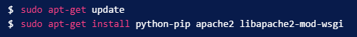
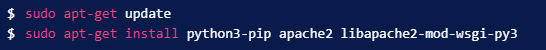
Конфигурирайте виртуална среда на Python
Сега, след като имаме компонентите от хранилищата на Ubuntu, можем да започнем да работим по нашия проект Django. Първата стъпка е да създадем виртуална среда на Python, така че нашият проект Django да бъде отделен от инструментите на системата и всички други проекти на Python, върху които може да работим.
Трябва да инсталираме virtualenvкомандата за създаване на тези среди. Можем да получим това с помощта на pip.
Ако използвате Python2:
Ако използвате Python 3 :
С virtualenvинсталирането можем да започнем да формираме нашия проект. Създайте директория, в която искате да запазите проекта си, и се преместете в директорията:
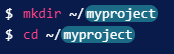
В директорията на проекта създайте виртуална среда на Python, като напишете:
Това ще създаде директория, наречена myprojectenvвъв вашата myprojectдиректория. Вътре ще инсталира локална версия на Python и локална версия на pip. Можем да използваме това, за да инсталираме и конфигурираме изолирана Python среда за нашия проект.
Преди да инсталираме изискванията на нашия проект за Python, трябва да активираме виртуалната среда. Можете да направите това, като напишете:
Вашата подкана трябва да се промени, за да покаже, че сега работите във виртуална среда на Python. Ще изглежда така: .(myprojectenv)user@host:~/myproject$
При активна виртуална среда инсталирайте Django с локалния екземпляр на pip
Създайте и конфигурирайте нов Django проект
Сега, когато Django е инсталиран в нашата виртуална среда, можем да създадем действителните файлове на проекта Django.
Създайте проекта Django
Тъй като вече имаме директория на проекта, ще кажем на Django да инсталира файловете тук. Той ще създаде директория от второ ниво с действителния код, което е нормално, и ще постави скрипт за управление в тази директория. Ключът към това е точката в края, която казва на Django да създаде файловете в текущата директория:
Първото нещо, което трябва да направим с нашите новосъздадени файлове на проекта, е да коригираме настройките. Отворете файла с настройки с вашия текстов редактор:
Ние ще използваме базата данни SQLite по подразбиране в това ръководство за простота, така че всъщност не е необходимо да променяме твърде много. Ще се фокусираме върху конфигурирането на разрешените хостове, за да ограничим домейните, на които отговаряме, и конфигурирането на директорията със статични файлове, където Django ще постави статични файлове, така че уеб сървърът да може да ги обслужва лесно.
Започнете, като намерите ALLOWED_HOSTSлинията. В квадратните скоби въведете публичния IP адрес на вашия сървър, име на домейн или и двете. Всяка стойност трябва да бъде поставена в кавички и разделена със запетая като нормален списък на Python:
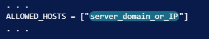
В долната част на файла ще добавим ред за конфигуриране на тази директория. Джанго използваSTATIC_ROOT настройката, за да определи директорията, където да отидат тези файлове. Ще използваме част от Python, за да му кажем да използва директория, наречена „статична“ в главната директория на нашия проект:
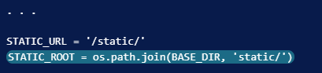
Завършете първоначалната настройка на проекта
Сега можем да мигрираме първоначалната схема на база данни към нашата SQLite база данни с помощта на скрипта за управление:
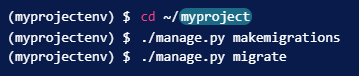
Създайте администраторски потребител за проекта, като напишете:
Ще трябва да изберете потребителско име, да предоставите имейл адрес и да изберете и потвърдите парола.
Можем да съберем цялото статично съдържание в местоположението на директорията, което сме конфигурирали, като напишем:
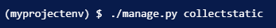
Ще трябва да потвърдите операцията. Статичните файлове ще бъдат поставени в директория, нареченаstatic в директорията на вашия проект.
Сега можем да коригираме настройките на нашата защитна стена, за да позволим трафик към нашия сървър за разработка на Django, който ще изпълняваме на порт 8000. Ако сте следвали първоначалното ръководство за настройка на сървъра в предварителните условия, трябва да имате активирана UFW защитна стена в момента.
Разрешете връзки към сървъра за разработка, като напишете:
И накрая, можете да тествате проекта си, като стартирате сървъра за разработка на Django с тази команда:
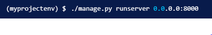
Във вашия уеб браузър посетете името на домейна или IP адреса на вашия сървър, последвано от :8000
Трябва да видите индексната страница на Django по подразбиране:
Ако добавите /adminкъм края на URL адреса в адресната лента, ще бъдете подканени да въведете администраторското потребителско име и парола, които сте създали с командата createsuperuser:
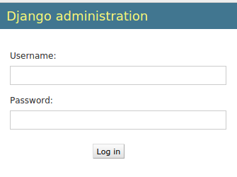
След удостоверяване можете да получите достъп до администраторския интерфейс на Django по подразбиране:
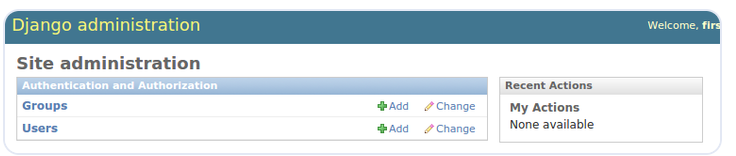
Когато приключите с проучването, натиснете CTRL-C в прозореца на терминала, за да изключите сървъра за разработка.
Вече приключихме с Django за момента, така че можем да излезем от нашата виртуална среда, като напишем:
Конфигурирайте Apache
Сега, когато вашият Django проект работи, можем да конфигурираме Apache като преден край. Клиентските връзки, които получава, ще бъдат преведени във формат WSGI, който приложението Django очаква с помощта на mod_wsgiмодула. Това трябваше да бъде автоматично активирано при инсталиране по-рано.
За да конфигурираме WSGI пропуска, ще трябва да редактираме файла на виртуалния хост по подразбиране:
Можем да запазим директивите, които вече присъстват във файла. Просто трябва да добавим някои допълнителни елементи.
За да започнем, нека конфигурираме статичните файлове. Ще използваме псевдоним, за да кажем на Apache да картографира всички заявки, започващи с, /staticкъм „статичната“ директория в папката на нашия проект. Събрахме статичните активи там по-рано. Ще настроим псевдонима и след това ще предоставим достъп до въпросната директория с блок на директория:
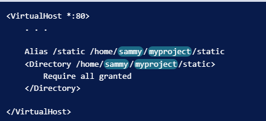
След това ще предоставим достъп до wsgi.pyфайла в директорията на проекта от второ ниво, където се съхранява кодът на Django. За да направим това, ще използваме секция на директория с файлова секция вътре. Ще предоставим достъп до файла вътре в тази вложена конструкция:
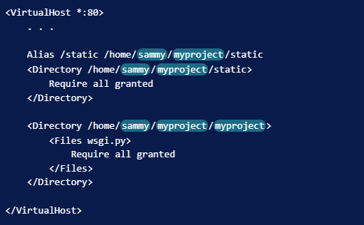
След като това е конфигурирано, ние сме готови да конструираме частта от файла, която всъщност обработва WSGI пропуска. Ще използваме режим на демон, за да стартираме процеса WSGI, което е препоръчителната конфигурация. Можем да използваме WSGIDaemonProcessдирективата, за да настроим това.
Тази директива приема произволно име за процеса. Ще използваме myproject, за да останем последователни. След това настроихме дома на Python, където Apache може да намери всички компоненти, които може да са необходими. Тъй като използвахме виртуална среда, можем да я насочим директно към директорията на нашата базова виртуална среда. След това задаваме пътя на Python да сочи към основата на нашия проект Django.
След това трябва да посочим групата процеси. Това трябва да сочи към същото име, което сме избрали за директивата WSGIDaemonProcess( myprojectв нашия случай). И накрая, трябва да зададем псевдонима на скрипта, така че Apache да предава заявки за основния домейн към wsgi.pyфайла:
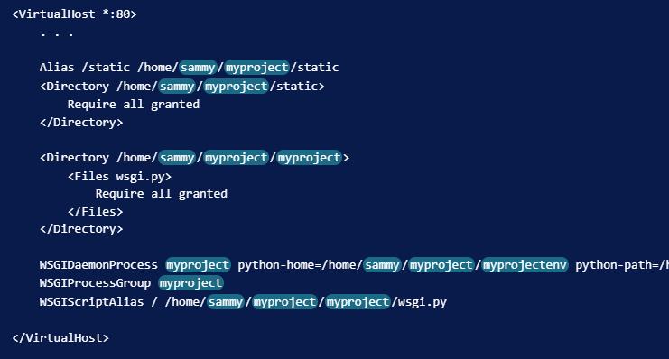
Когато приключите с тези промени, запазете и затворете файла.
Приключване на някои проблеми с разрешенията
Ако използвате базата данни SQLite, която е използваната по подразбиране в тази статия, трябва да разрешите на процеса Apache достъп до този файл.
За да направите това, първата стъпка е да промените разрешенията, така че собственикът на групата на базата данни да може да чете и пише. Файлът на базата данни се извиква db.sqlite3по подразбиране и трябва да се намира в директорията на вашия базов проект:
След това трябва да дадем на групата, под която работи Apache, групата www-data, груповата собственост на файла:
За да пишем във файла, ние също трябва да дадем собственост на групата Apache върху родителската директория на базата данни:
Трябва отново да се настроим през нашата защитна стена. Вече не се нуждаем от отворен порт 8000, тъй като проксираме чрез Apache, така че можем да премахнем това правило. След това можем да добавим изключение, за да разрешим трафик към процеса на Apache:
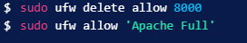
Проверете Apache файловете си, за да се уверите, че не сте направили синтактични грешки:
Докато последният изходен ред изглежда така, вашите файлове са в добра форма:
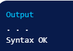
След като направите тези стъпки, вие сте готови да рестартирате услугата Apache, за да приложите промените, които сте направили. Рестартирайте Apache, като напишете:
Вече трябва да имате достъп до вашия Django сайт, като отидете на името на домейна или IP адреса на вашия сървър, без да посочвате порт. Редовният сайт и администраторският интерфейс трябва да функционират според очакванията.
Заключение
В това ръководство сме създали проект на Django в собствена виртуална среда. Конфигурирахме Apache с mod_wsgiда обработва клиентски заявки и интерфейс с приложението Django.
Django прави създаването на проекти и приложения лесно, като предоставя много от общите части, което ви позволява да се съсредоточите върху уникалните елементи. Като използвате общата верига от инструменти, описана в тази статия, можете лесно да обслужвате приложенията, които създавате от един сървър.
Конфигурирайте виртуална среда на Python
Сега, след като имаме компонентите от хранилищата на Ubuntu, можем да започнем да работим по нашия проект Django. Първата стъпка е да създадем виртуална среда на Python, така че нашият проект Django да бъде отделен от инструментите на системата и всички други проекти на Python, върху които може да работим. Трябва да инсталираме virtualenvкомандата за създаване на тези среди. Можем да получим това с помощта на pip.
Ако използвате Python2:
Ако използвате Python 3 :
С virtualenvинсталирането можем да започнем да формираме нашия проект. Създайте директория, в която искате да запазите проекта си, и се преместете в директорията:
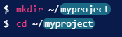В директорията на проекта създайте виртуална среда на Python, като напишете:
Това ще създаде директория, наречена myprojectenvвъв вашата myprojectдиректория. Вътре ще инсталира локална версия на Python и локална версия на pip. Можем да използваме това, за да инсталираме и конфигурираме изолирана Python среда за нашия проект. Преди да инсталираме изискванията на нашия проект за Python, трябва да активираме виртуалната среда. Можете да направите това, като напишете:
Вашата подкана трябва да се промени, за да покаже, че сега работите във виртуална среда на Python. Ще изглежда така: .(myprojectenv)user@host:~/myproject$ При активна виртуална среда инсталирайте Django с локалния екземпляр на pip
Създайте и конфигурирайте нов Django проект
Сега, когато Django е инсталиран в нашата виртуална среда, можем да създадем действителните файлове на проекта Django.
Създайте проекта Django
Тъй като вече имаме директория на проекта, ще кажем на Django да инсталира файловете тук. Той ще създаде директория от второ ниво с действителния код, което е нормално, и ще постави скрипт за управление в тази директория. Ключът към това е точката в края, която казва на Django да създаде файловете в текущата директория:Ние ще използваме базата данни SQLite по подразбиране в това ръководство за простота, така че всъщност не е необходимо да променяме твърде много. Ще се фокусираме върху конфигурирането на разрешените хостове, за да ограничим домейните, на които отговаряме, и конфигурирането на директорията със статични файлове, където Django ще постави статични файлове, така че уеб сървърът да може да ги обслужва лесно. Започнете, като намерите ALLOWED_HOSTSлинията. В квадратните скоби въведете публичния IP адрес на вашия сървър, име на домейн или и двете. Всяка стойност трябва да бъде поставена в кавички и разделена със запетая като нормален списък на Python:
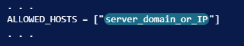В долната част на файла ще добавим ред за конфигуриране на тази директория. Джанго използваSTATIC_ROOT настройката, за да определи директорията, където да отидат тези файлове. Ще използваме част от Python, за да му кажем да използва директория, наречена „статична“ в главната директория на нашия проект:
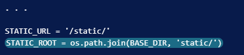Завършете първоначалната настройка на проекта
Сега можем да мигрираме първоначалната схема на база данни към нашата SQLite база данни с помощта на скрипта за управление: 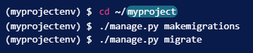Създайте администраторски потребител за проекта, като напишете:
Ще трябва да изберете потребителско име, да предоставите имейл адрес и да изберете и потвърдите парола. Можем да съберем цялото статично съдържание в местоположението на директорията, което сме конфигурирали, като напишем:
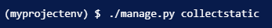Ще трябва да потвърдите операцията. Статичните файлове ще бъдат поставени в директория, нареченаstatic в директорията на вашия проект. Сега можем да коригираме настройките на нашата защитна стена, за да позволим трафик към нашия сървър за разработка на Django, който ще изпълняваме на порт 8000. Ако сте следвали първоначалното ръководство за настройка на сървъра в предварителните условия, трябва да имате активирана UFW защитна стена в момента. Разрешете връзки към сървъра за разработка, като напишете:
И накрая, можете да тествате проекта си, като стартирате сървъра за разработка на Django с тази команда:
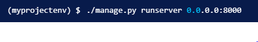Във вашия уеб браузър посетете името на домейна или IP адреса на вашия сървър, последвано от :8000
Трябва да видите индексната страница на Django по подразбиране: Ако добавите /adminкъм края на URL адреса в адресната лента, ще бъдете подканени да въведете администраторското потребителско име и парола, които сте създали с командата createsuperuser:
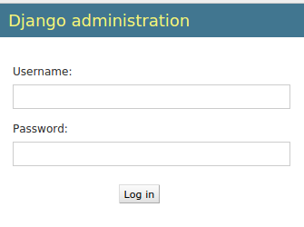След удостоверяване можете да получите достъп до администраторския интерфейс на Django по подразбиране:
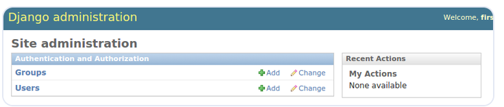Когато приключите с проучването, натиснете CTRL-C в прозореца на терминала, за да изключите сървъра за разработка. Вече приключихме с Django за момента, така че можем да излезем от нашата виртуална среда, като напишем:
Конфигурирайте Apache
Сега, когато вашият Django проект работи, можем да конфигурираме Apache като преден край. Клиентските връзки, които получава, ще бъдат преведени във формат WSGI, който приложението Django очаква с помощта на mod_wsgiмодула. Това трябваше да бъде автоматично активирано при инсталиране по-рано. За да конфигурираме WSGI пропуска, ще трябва да редактираме файла на виртуалния хост по подразбиране:
Можем да запазим директивите, които вече присъстват във файла. Просто трябва да добавим някои допълнителни елементи. За да започнем, нека конфигурираме статичните файлове. Ще използваме псевдоним, за да кажем на Apache да картографира всички заявки, започващи с, /staticкъм „статичната“ директория в папката на нашия проект. Събрахме статичните активи там по-рано. Ще настроим псевдонима и след това ще предоставим достъп до въпросната директория с блок на директория:
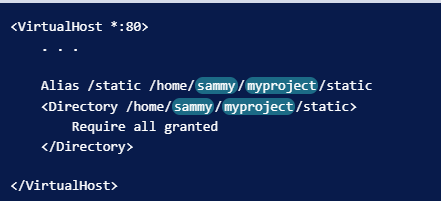След това ще предоставим достъп до wsgi.pyфайла в директорията на проекта от второ ниво, където се съхранява кодът на Django. За да направим това, ще използваме секция на директория с файлова секция вътре. Ще предоставим достъп до файла вътре в тази вложена конструкция:
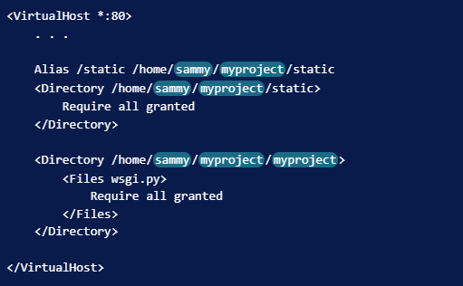След като това е конфигурирано, ние сме готови да конструираме частта от файла, която всъщност обработва WSGI пропуска. Ще използваме режим на демон, за да стартираме процеса WSGI, което е препоръчителната конфигурация. Можем да използваме WSGIDaemonProcessдирективата, за да настроим това. Тази директива приема произволно име за процеса. Ще използваме myproject, за да останем последователни. След това настроихме дома на Python, където Apache може да намери всички компоненти, които може да са необходими. Тъй като използвахме виртуална среда, можем да я насочим директно към директорията на нашата базова виртуална среда. След това задаваме пътя на Python да сочи към основата на нашия проект Django. След това трябва да посочим групата процеси. Това трябва да сочи към същото име, което сме избрали за директивата WSGIDaemonProcess( myprojectв нашия случай). И накрая, трябва да зададем псевдонима на скрипта, така че Apache да предава заявки за основния домейн към wsgi.pyфайла:
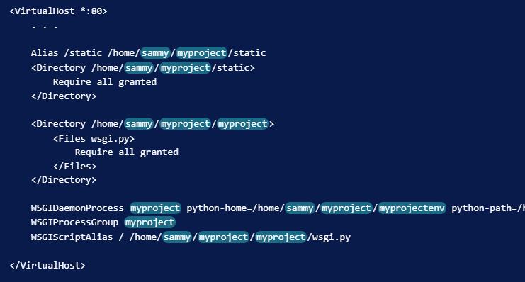Когато приключите с тези промени, запазете и затворете файла.
Приключване на някои проблеми с разрешенията
Ако използвате базата данни SQLite, която е използваната по подразбиране в тази статия, трябва да разрешите на процеса Apache достъп до този файл. За да направите това, първата стъпка е да промените разрешенията, така че собственикът на групата на базата данни да може да чете и пише. Файлът на базата данни се извиква db.sqlite3по подразбиране и трябва да се намира в директорията на вашия базов проект:
След това трябва да дадем на групата, под която работи Apache, групата www-data, груповата собственост на файла:
За да пишем във файла, ние също трябва да дадем собственост на групата Apache върху родителската директория на базата данни:
Трябва отново да се настроим през нашата защитна стена. Вече не се нуждаем от отворен порт 8000, тъй като проксираме чрез Apache, така че можем да премахнем това правило. След това можем да добавим изключение, за да разрешим трафик към процеса на Apache:
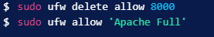Проверете Apache файловете си, за да се уверите, че не сте направили синтактични грешки:
Докато последният изходен ред изглежда така, вашите файлове са в добра форма:
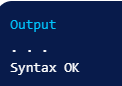След като направите тези стъпки, вие сте готови да рестартирате услугата Apache, за да приложите промените, които сте направили. Рестартирайте Apache, като напишете:
Вече трябва да имате достъп до вашия Django сайт, като отидете на името на домейна или IP адреса на вашия сървър, без да посочвате порт. Редовният сайт и администраторският интерфейс трябва да функционират според очакванията.
Заключение
В това ръководство сме създали проект на Django в собствена виртуална среда. Конфигурирахме Apache с mod_wsgiда обработва клиентски заявки и интерфейс с приложението Django. Django прави създаването на проекти и приложения лесно, като предоставя много от общите части, което ви позволява да се съсредоточите върху уникалните елементи. Като използвате общата верига от инструменти, описана в тази статия, можете лесно да обслужвате приложенията, които създавате от един сървър.